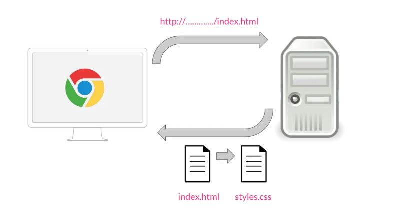

CSS3 es una tecnología que ha tenido una evolución en el tiempo, que actualmente se encuentra en su versión 3, como su propio nombre indica.
Sus siglas corresponden a “Cascading Style Sheets”, que tiene el siguiente significado:
CSS es un lenguaje de diseño gráfico que permite definir y crear la presentación de un documento estructurado escrito en un lenguaje de marcado. Es muy usado para establecer el diseño visual de los documentos web e interfaces de usuario escritas en HTML.
Vamos a ver en un pequeño esquema qué es lo que sucede desde que se solicita una página web hasta que se le aplica el estilo. El proceso es el siguiente:
Cuando desde un navegador, por ejemplo Chrome, solicitamos una página a través de una dirección, por ejemplo http://..../index.html, esta petición va a un servidor web, que nos devuelve la página que se ha solicitado.
Para aplicar estilos en las páginas HTML, se utiliza un fichero aparte, una hoja de estilos con la extensión .css, por lo que cuando estos dos documentos llegan al navegador, va a leer el documento HTML, le aplica los estilos CSS y lo muestra.